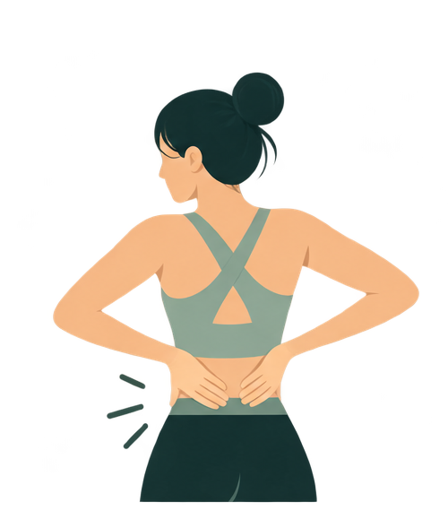
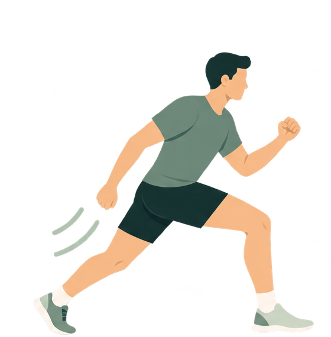
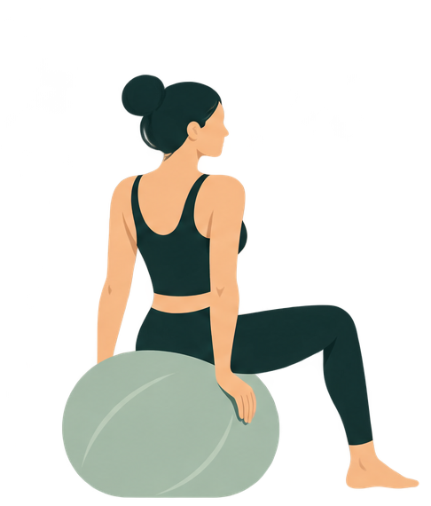
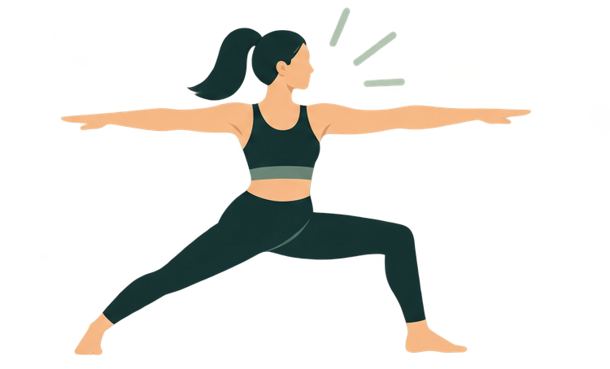
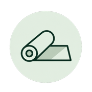
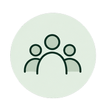

Finished physio
You’ve finished treatment but don’t quite feel ready to exercise independently.
PHYSIOTHERAPY • EXERCISE • PILATES
West Hertfordshire based physio for those looking for support in returning to sports and fitness.
Less pain
and more freedom
Stronger and
more resilient
Feel confident
in your movement
INDIVIDUAL SUPPORT

You’ve finished treatment but don’t quite feel ready to exercise independently.

You want to get back to the gym, Pilates, sport or the activities you enjoy.

Pain, fatigue or flare-ups make it difficult to know how much you can safely do.
You’re worried about doing the wrong thing or pushing too far.

You want the confidence to exercise at home, in a gym, class or studio.
BEYOND INDIVIDUAL SUPPORT
Sharing expertise and supporting healthier, more active people and workplaces.
Practical, evidence-based training and CPD to help healthcare professionals develop their skills and confidence.
Explore training →Tailored exercise and wellbeing programmes to support healthier, happier and more active teams.
Find out more →MEET KARLENE
I’m a specialist musculoskeletal physiotherapist with 16 years’ NHS experience and over a decade teaching Reformer and Mat Pilates.
I created The Physio Focus to help people manage pain, build strength and get back to the movement they enjoy — with confidence.

10+ yearsTeaching Pilates
SpecialistMSK & spinal physio
“Helping you move
well, with confidence,
for the things you
love to do.”KARLENE
REAL STORIES. REAL PROGRESS.
“Karlene gave me the confidence to return to the gym after my knee surgery. I now train independently, feel stronger and more capable than I have in years.
“I was nervous about doing the wrong thing, but Karlene understood my history and tailored everything to me. I now have the knowledge and confidence to exercise on my own.
“Professional, supportive and genuinely empowering. Karlene helped me get back to playing golf and doing the things I enjoy.
YOUR FIRST STEP
Start with a 60-minute Physio Pilates assessment and we’ll work out the right next step for you.
Book your initial assessment →£80 · 60 minutes